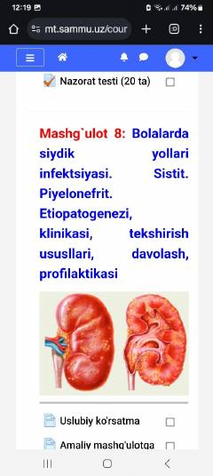

BSBolalarda siydik yo'llari infektsiyalari va pielonefritni davolash hamda tashxislash bo'yicha uslubiy qo'llanma.
Ushbu uslubiy ko'rsatma bolalarda siydik yo'llari infektsiyasi va pielonefrit kasalligining etiopatogenezi, klinikasi, diagnostika va davolash usullariga bag'ishlangan. Shuningdek, talabalar bilimini baholash uchun nazorat testlari va ularning javoblari keltirilgan.